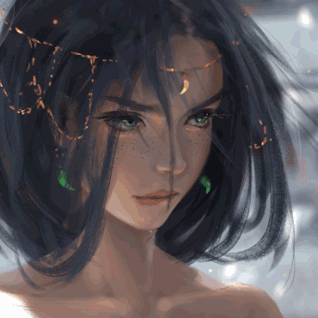

Annie's Favorite Artists
 |
 |  |
|
|---|---|---|---|
"烟" by WLOP on Deviant Art |
"Aeolian" by WLOP on Deviant Art |
"Yo bro is it safe down there in the woods? Yeah man it's cool" By Tomislav Jagnjic on Artstation |
"Bunny" by Meow Vortex on Deviant Art |
WLOP is by far one of my favorite artists. He is a very skilled artist and this proves it. You can see all the careful details he put into drawing this gif. What I especially love, is the detail he put into th eyes and how he shades/colors everything. You can see the emotion in this drawing which is something I strive to do. |
WLOP once again. This one, I can talk a lot more on. I love how bright the eyes are, it draws viewers to look at it. It is especially good that the earings are the same green, so the eyes don't feel out of place. From personal experience, it's extremely hard to color something to look remotely metallic and shiny, WLOP is a miracle worker here with the small tiara. The hair sways here also look extremely realistic which I LOVE. You can see how real it feels while also providing the sketchy/painty feel. |
Tomislav shows the beauty of nature despite the title. You can see the little details he put into everything. Let's not forget to mention that the name is hilarious. |
This is a cute character made by Meow Vortex. I was actually given the honors to talk to her a while back. Since I left DA, it no longer speak with her, but all her art is adorable and cute like this. |